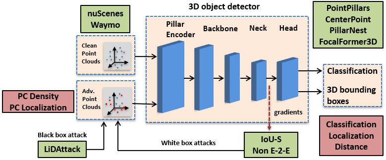
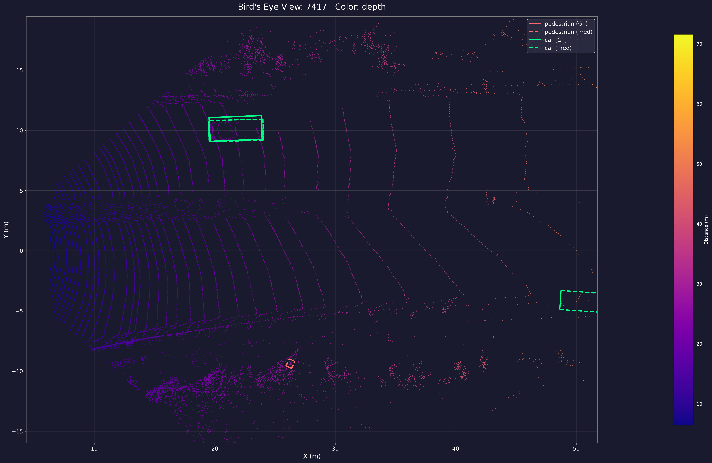
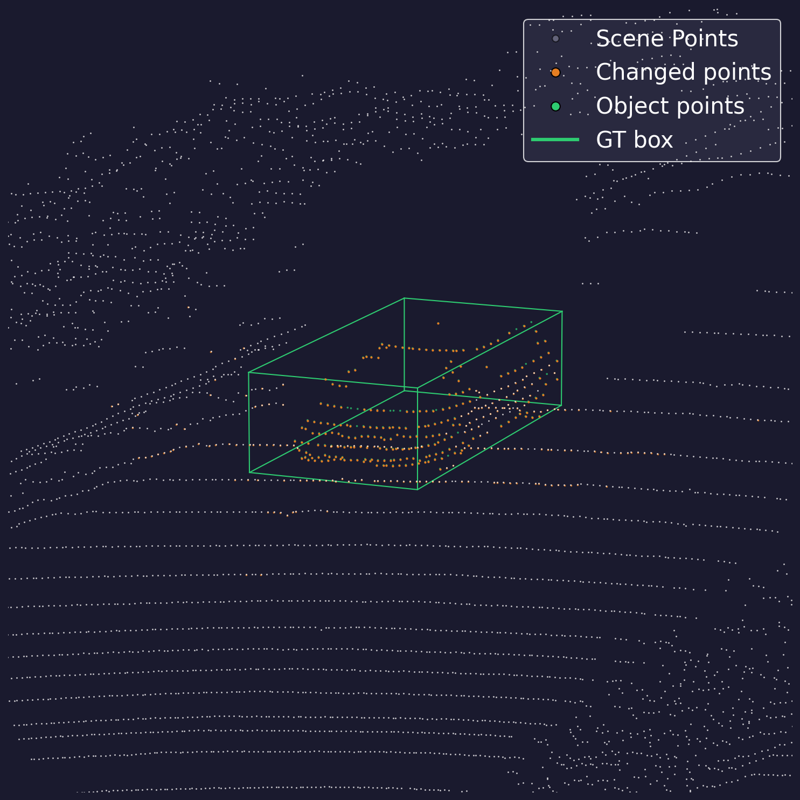

Recent advancements in LiDAR-only 3D object detection have demonstrated improved detection accuracy over benchmark datasets. However, the adversarial robustness of these models remains untested. Very few adversarial robustness studies exist for LiDAR-only 3D object detection and unfortunately, even they are limited to legacy models. Moreover, there is a systemic gap in the existing evaluation frameworks that rely simply on mAP ignoring other structural and predictive factors. To fill this gap, we propose a holistic framework that evaluates adversarial robustness using two structural factors (point cloud density and point cloud localization) and three predictive factors (misclassification, localization error, distance from ego). Using this framework, we perform an empirical study and critical analysis on recent and legacy state-of-theart models using adversarial attacks specifically designed for LiDAR based models. Our key finding is that high-capacity, voxel-based detectors are more susceptible to structured coordinate perturbations than pillar-based detectors. Additionally, non-anchor-based detectors demonstrate poor adversarial robustness, which necessitates rethinking model training techniques. Overall, our results demonstrate that recent models are as vulnerable to adversarial attacks as their predecessors. Therefore, we argue that there is a need to improve the evaluation benchmarks for 3D object detection that not only reward architectural modifications for improving detection accuracy, but also evaluate whether the design choices improve adversarial robustness.

Methodology Overview: End-to-end framework for evaluating adversarial robustness in LiDAR-based 3D object detection across structural and predictive multi-factor metrics, diverse attack suites, and detection architectures. The robustness factors are represented in boxes.
Note: Higher Attack Success Rate (ASR %) indicates greater vulnerability to the adversarial attack. Values in bold represent highest vulnerability per attack column.
| Model | LiDAttack | Non-E2E | IoU-S Attack Variants | ||
|---|---|---|---|---|---|
| Attachment | Perturbation | Detachment | |||
| CenterPoint | 0.81% | 48.60% | 23.30% | 88.46% | 43.26% |
| FocalFormer3D | 5.77% | 59.30% | 50.33% | 97.86% | 68.30% |
| PillarNeSt | 0.60% | 35.22% | 50.29% | 53.15% | 45.27% |
| PointPillars | 0.95% | 49.32% | 75.70% | 40.83% | 38.20% |
| Model | LiDAttack | Non-E2E | IoU-S Attack Variants | ||
|---|---|---|---|---|---|
| Attachment | Perturbation | Detachment | |||
| CenterPoint | 0.00% | 71.49% | 33.50% | 71.49% | 74.36% |
| FocalFormer3D | 2.44% | 93.25% | 25.28% | 93.25% | 33.12% |
| PillarNeSt | 3.02% | 43.57% | 39.13% | 43.57% | 23.73% |
| PointPillars | 2.65% | 19.17% | 65.05% | 19.17% | 33.00% |
Visual comparisons between clean LiDAR point clouds and adversarial perturbations generated across our benchmark:

